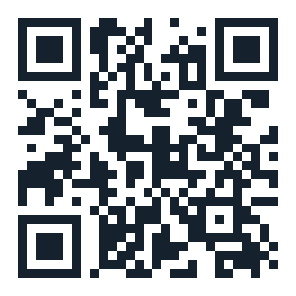

Laser spy · Part 03 · Development
How the mission activates
Así se activa la misión
Cuatro pasos: activar, alinear, detectar y avisar. Mira cómo el láser espía atrapa a quien cruza el haz, y pruébalo tú en el simulador.
Project summary · parte 03 · resumen en inglés
The mission works in four steps: activate, align, detect and alert. The SG90 servo points the beam at the light sensor: with the beam, the sensor reads ≈ 900; when someone breaks the beam, the number drops to ≈ 150. The Arduino compares the reading with a threshold (≈ 500, calculated when it starts): below the threshold, it turns on the LED and the buzzer.
Lumi te lo presenta con su voz en menos de un minuto. En Paso a paso avanzas tú, a tu ritmo: con el botón Siguiente, las flechas del teclado o un control de presentaciones.

03 · Desarrollo
The 4 steps of the mission
Los 4 pasos de la misión
-
PASO 1
Activar · Activate
El circuito recibe energía y el Arduino empieza el programa: primero mide la luz.
-
PASO 2
Alinear · Align
El servo SG90 apunta el haz justo al sensor.
-
PASO 3
Detectar · Detect
Algo interrumpe el haz: el sensor recibe menos luz y el número baja.
-
PASO 4
Avisar · Alert
Si el número baja del umbral, se encienden el LED y el zumbador.
Estado normal: la luz llega al sensor y el sistema permanece a la espera.
Alerta: el cambio de luz desencadena la respuesta programada.
Simulador
Try it: break the beam
Pruébalo: corta el haz
loop() se repite miles de veces por segundo y escribe el número en el Monitor Serie 5 veces por segundo.
Sin haz medido: ≈150 Con haz: ≈900 Umbral: ≈525
Compártelo

Scan and break the beam
Escanea y corta el haz
Ábrelo en tu celular y prueba los tres retos.
Seguridad: nunca mires el láser directo ni lo apuntes a ojos, espejos o pantallas. Apúntalo siempre al sensor o a la mesa. (Láser clase 3R, hasta ≈5 mW)